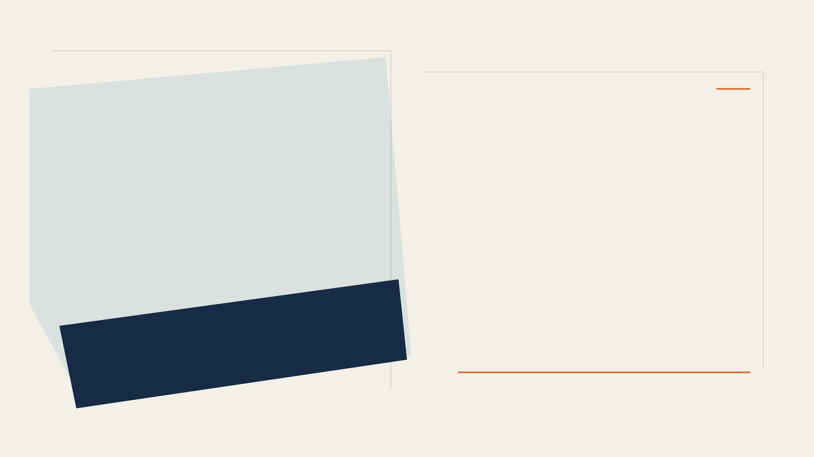
رحلة سؤال علمي
01 / 06
؟
؟
؟
هل اقترب العلم؟
مستقبل علاج السكري
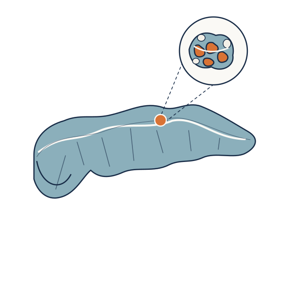
من السؤال الكبير
إلى التفاصيل الصغيرة
إلى التفاصيل الصغيرة
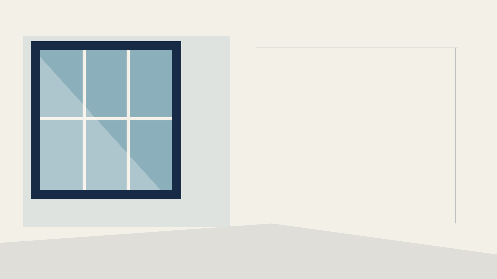
السؤال يبدأ من الحياة
02 / 06
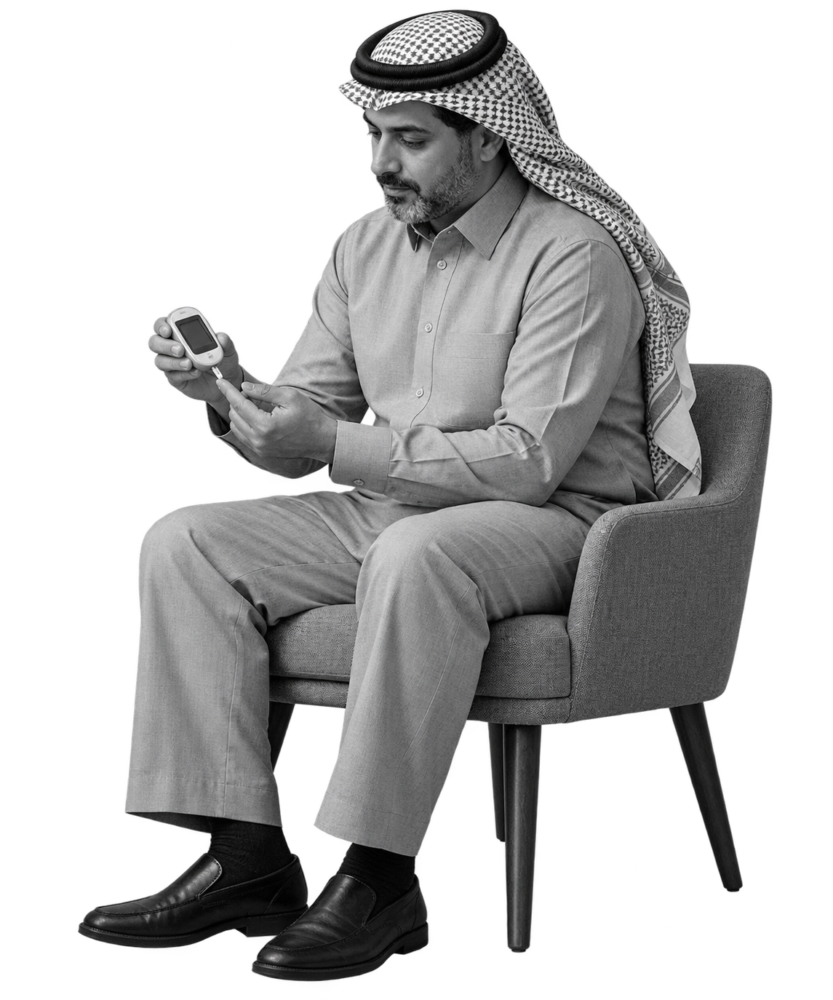
سؤال يشغل
المرضى وأسرهم
ويواصل الباحثون محاولة الإجابة عنه
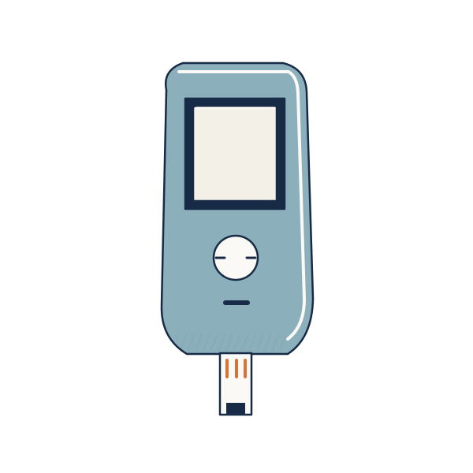
تختلف وسائل المتابعة والعلاج من شخص إلى آخر
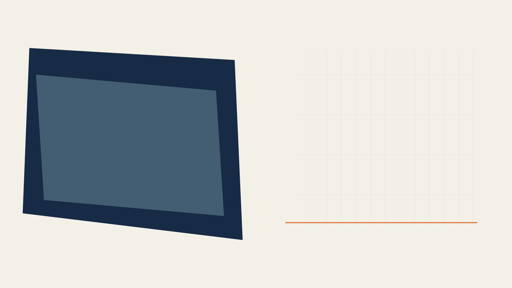
داخل البحث العلمي
03 / 06
أبحاث الخلايا الجذعية
من مسارات البحث، خاصة في السكري من النوع الأول
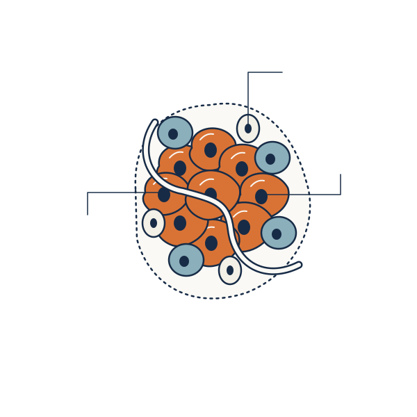
رسم توضيحي
خلايا منتجة
للإنسولين
للإنسولين
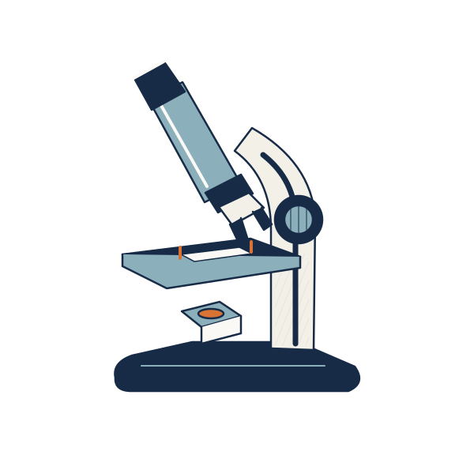
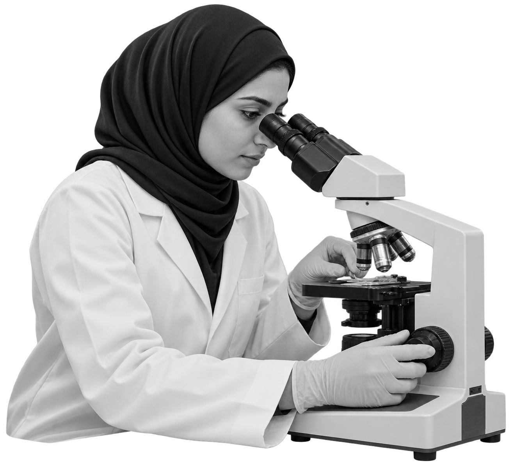
آفاق تستحق الاهتمام
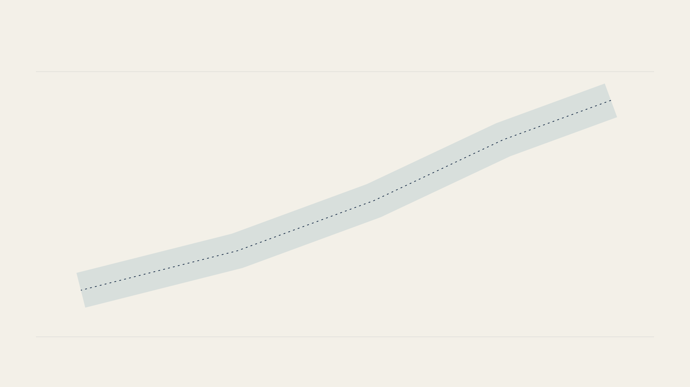
من الوعد إلى الدليل
04 / 06
النتيجة الواعدة بداية
والسلامة والفعالية تحتاجان إلى دليل
01
البحث
الأساسي
02
الدراسات
قبل السريرية
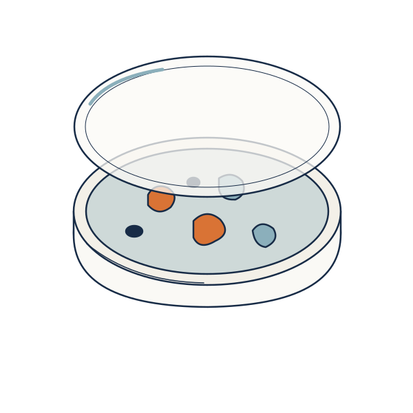
03
التقييم
السريري
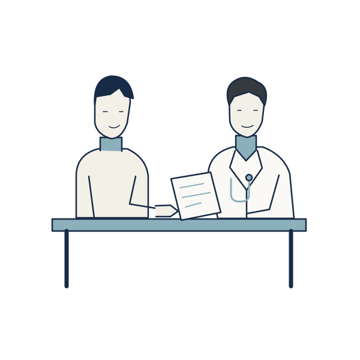
04
السلامة
والفعالية
05
المتابعة
طويلة المدى
مسار توضيحي لتراكم الأدلة، وقد تختلف المراحل وتتداخل بحسب العلاج
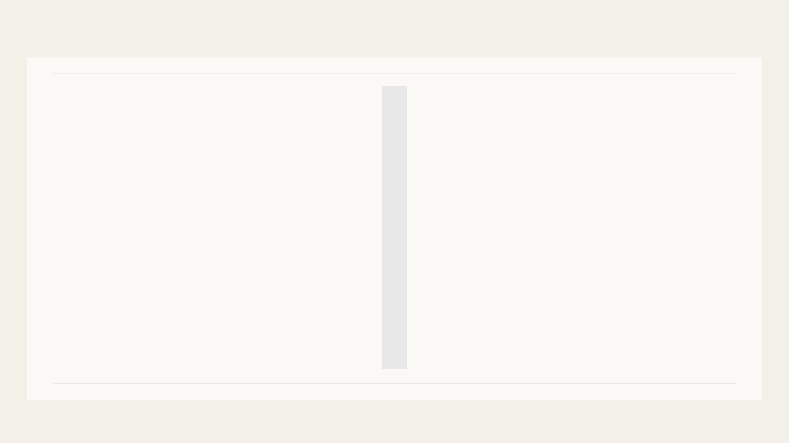
الأسئلة الأهم
05 / 06
مع كل اكتشاف، نعود إلى السؤال
ما الذي أثبته
العلم بالفعل؟
قراءة الدليل · رسم توضيحي
وما الذي لا يزال
قيد البحث؟
؟
حدود المعرفة
الأمل العلمي يبدأ بمعرفة ما نعرفه، وما لم نعرفه بعد
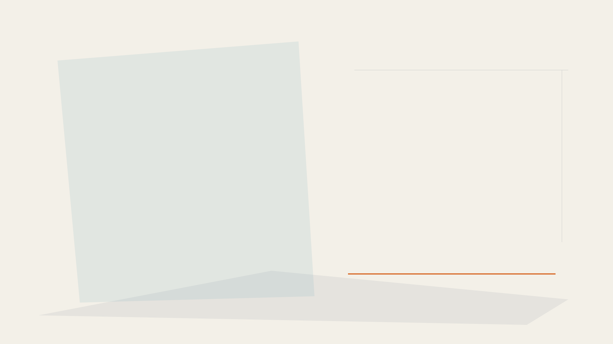
المعرفة المبنية على الدليل
06 / 06
بين الأمل العلمي
والوعود المتداولة
أسئلة يناقشها الباحث
في كتابه المرتقب
غلاف مؤقت
السكري..
هل اقتربت
نهاية المرض؟
؟
كتاب مرتقب
رحلة سؤال لم تنتهِ بعد
تصميم مؤقت إلى حين توفير الغلاف الرسمي